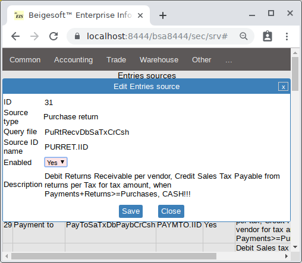
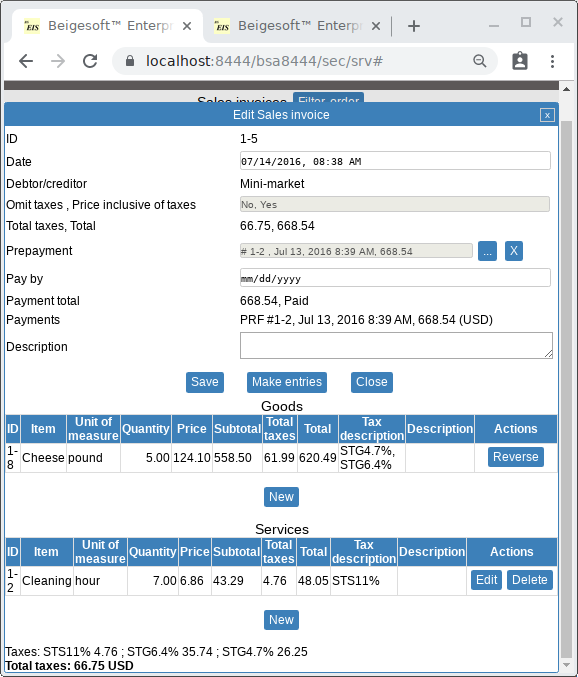
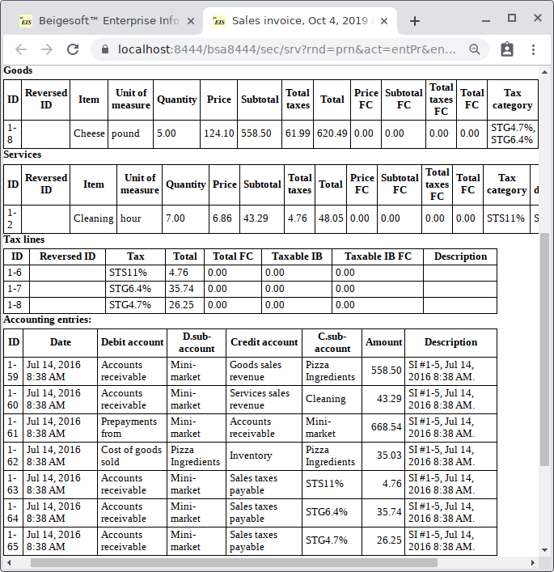
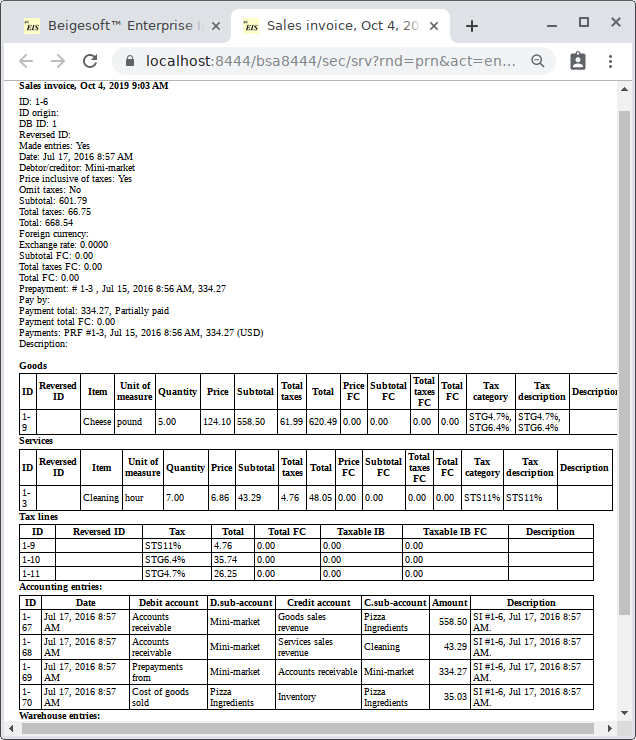
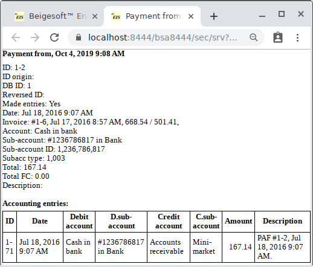
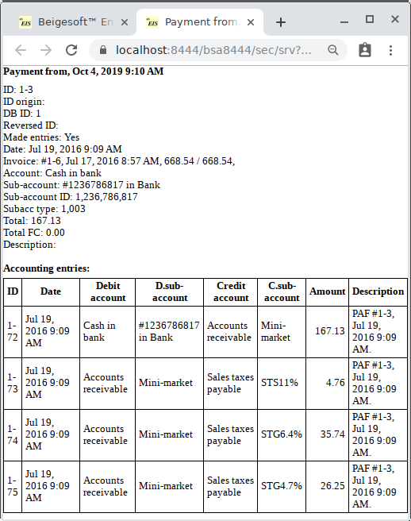

Accounting for sales tax (VAT, GST) cash method. Cash method vs accrual method.
Keywords: Accounting for sales tax cash method, cash method vs accrual method.
Basic principles.
At first, it's need to understand these things:
- Prepaid merchandise - means that buyer has paid 100% for this merchandise, and has not yet received it (merchandise).
- Paid merchandise - means that buyer has paid or prepaid 100% for this merchandise and has received it (merchandise).
- Prepaid (paid partially) merchandise - means that buyer has paid less than 100% for this merchandise.
- Sold merchandise - means that buyer has received this merchandise*.
Accrual and cash methods are dedicated for making income tax "WHEN" (all other taxes usually have the same method as income tax).
The most used method for income tax is:
Income tax = (Business revenue - Business expenses) * Tax Rate
There are two methods "WHEN" revenue or expense is occurred:
- CASH method - means that expense/revenue/tax is occurs when merchandise is sold and paid.
- ACCRUAL method - means that expense/revenue/tax is occurs when merchandise is sold (even unpaid or partially paid).
Sales tax cash method
In some countries the law may demand to use the cash method for sales tax despite using the accrual method for income tax.
In Beigesoft™ EIS you can use this method for sales, purchases and their returns.
Let's make sales for example. At first, set enabled these "Entries sources":
- Sales taxes methods must be switched according to current rules (here is: Cash=On, Accrual=Off)
- Sales:
- #27 "Payment from. Debit Receivable per customer, Credit Sales taxes payable per tax for tax amount, when Payments>=Sales, CASH!!!" set on.
- #26 "Sales invoice. Debit Receivable per customer, Credit Sales taxes payable per tax for tax amount, when Payments>=Sales, CASH!!!" set on.
- #11 "Sales invoice. Debit Receivable per customer, Credit Sales taxes payable per tax for tax amount." set off.
- #30 "Sales return. Debit Sales tax receivable from returns per Tax, Credit Returns Payable per Customer for tax amount, when Payments+Returns>=Sales, CASH!!!" set on.
- #17 "Sales return. Debit Sales tax receivable from returns per Tax, Credit Returns Payable per Customer for tax amount." set off.
- Purchases:
- #29 "Payment to. Debit Sales tax from purchase per tax, Credit Payable per vendor for tax amount, when Payments>=Purchases, CASH!!!" set on.
- #28 "Purchase invoice. Debit Sales tax from purchase per tax, Credit Payable per vendor for tax amount, when Payments>=Purchases, CASH!!!" set on.
- #4 "Purchase invoice. Debit Sales tax from purchase per tax, Credit Payable per vendor for tax amount." set off.
- #31 "Purchase return. Debit Returns Receivable per vendor, Credit Sales Tax Payable from returns per Tax for tax amount, when Payments+Returns>=Purchases, CASH!!!" set on.
- #15 "Purchase return. Debit Returns Receivable per vendor, Credit Sales Tax Payable from returns per Tax for tax amount." set off.

Case #1. A 100% prepaid sales invoice.
Add a 100% "prepayment to a vendor (13 Jul. 2016, 668.54$ total) and post it. Then add a sales invoice (14 Jul. 2016, 668.54$ total) with that prepayment:

After the invoice has been posted, the report is:

As you can see, it made all the accounting entries: taxes, receivable to revenue, inventory to COGS, adjusting prepayments to receivable.
Case #2. A 50% prepaid sales invoice plus 25%*2 payments.
Add a 50% prepayment to a vendor (15 Jul. 2016, 334.27$ total) and post it. Then add a sales invoice with the same goods and services as above ones (17 Jul. 2016, 668.54$ total), then post it. The report is:

As you can see, it made only part of the accounting entries: receivable to revenue, inventory to COGS, adjusting prepayments to receivable.
Then add a payment (18 Jul. 2016, 167.14$ total) and post it:

As you can see, it made only the cash to receivable accounting entries.
Then add the rest payment (19 Jul. 2016, 167.13$ total) and post it:

As you can see, it made the cash to receivable and taxes to receivable accounting entries.